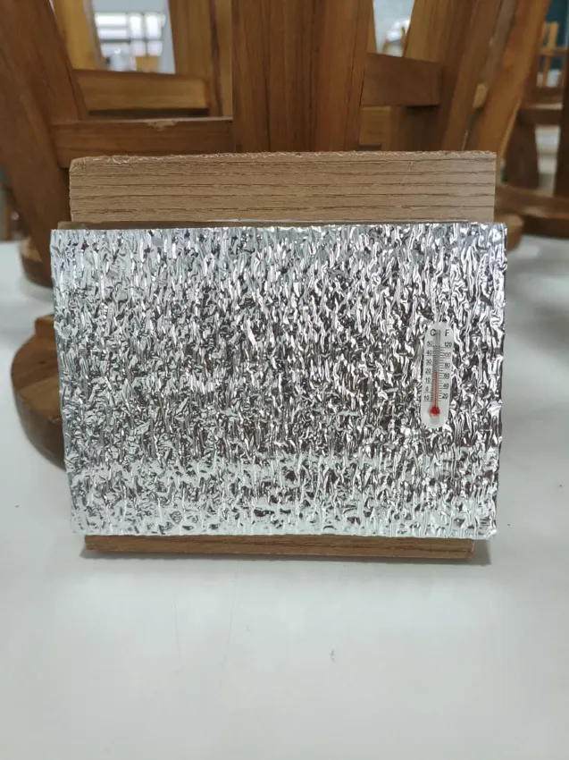
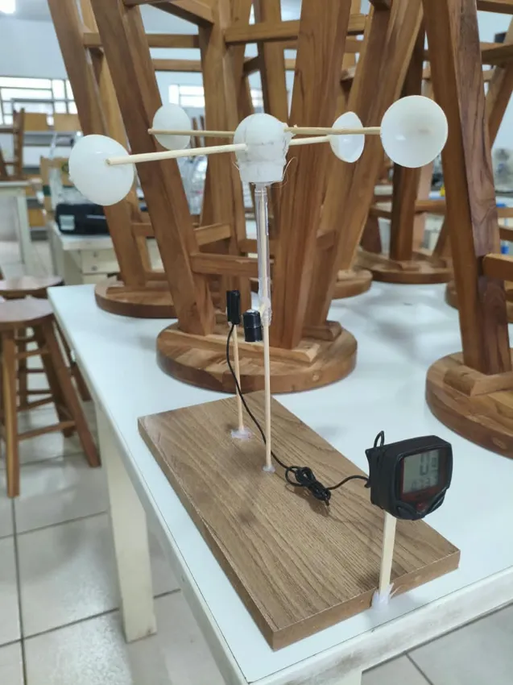
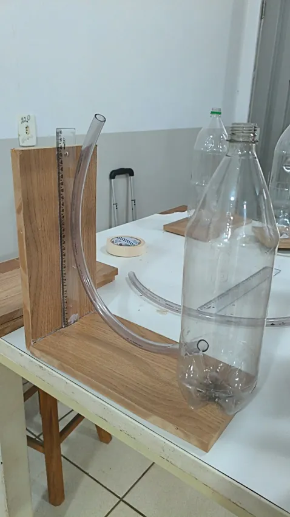

EVOLUÇÃO DAS MEDIÇÕES
ObservaçõesCIÊNCIA FEITA POR ESTUDANTES · PROJETO APOIADO PELA FAPEMAT
A nossa escola tem
um clima para descobrir.
Medimos o ambiente. Comparamos os lugares. Aprendemos a cuidar do nosso mundo.
⌂
✳
✳
🌱 Cada medição conta uma história
NOSSAS OBSERVAÇÕES
Aguardando medições reaisO que está acontecendo na escola?
DIÁRIO DE CAMPO
Últimas descobertas
As medições são observações de instrumentos escolares. Compare sempre mesmo horário, abrigo, local e período. O painel mostra exclusivamente registros reais enviados ao banco da escola.
CADA LUGAR É DIFERENTE
Onde faz mais calor? Onde chove?
Comparação exploratória por média dos registros por local. Para precipitação, cada valor representa o acúmulo desde a leitura anterior; não compare totais sem considerar a duração do intervalo.
NOSSO LABORATÓRIO
Feitos por nossas próprias mãos.
Toque e arraste os modelos para girá-los. Toque nos nomes para descobrir suas peças.
↔ arraste para girar
01 · TEMPERATURA
Abrigo térmico
Protege o sensor da radiação direta, permitindo comparar temperaturas do ar.

↔ arraste para girar
02 · VENTO
Anemômetro artesanal
As conchas giram com o vento. Com calibração, podemos estimar sua velocidade.

↔ arraste para girar
03 · PRESSÃO
Instrumento de pressão
Montagem experimental com garrafa, mangueira e régua para investigar diferenças de pressão. A leitura requer orientação e calibração.

04 · PRECIPITAÇÃO
Pluviômetro
A chuva também faz parte das medições. Aguardamos a foto do pluviômetro real dos Guardiões para produzir seu modelo interativo fiel.
CIÊNCIA EM LINGUAGEM SIMPLES
Pequenas perguntas, grandes descobertas.
Quanto o ar está quente ou frio? A sombra, o concreto e as plantas podem criar diferenças.
PERGUNTA · A quadra é mais quente que o jardim?Quanto vapor de água há no ar em relação ao máximo possível naquela temperatura.
PERGUNTA · O jardim fica mais úmido?Ar em movimento transporta calor e umidade. Árvores e paredes podem mudar sua velocidade.
PERGUNTA · Onde o vento circula melhor?É a força exercida pelo ar sobre uma área. Seu valor varia com altitude e condições do tempo.
PERGUNTA · Ela mudou antes da chuva?Um milímetro de chuva equivale a 1 litro de água sobre cada metro quadrado de superfície horizontal.
PERGUNTA · Quanto choveu desde a última coleta?É o conjunto das condições climáticas percebidas em um espaço pequeno: pátio, horta ou quadra.
PERGUNTA · Como podemos deixar a escola mais confortável?🌿 Descubram o refúgio de frescor da escola!
Meçam os mesmos indicadores em dois lugares no mesmo horário e comparem. Registrem se há sombra, árvores ou piso de concreto.
CADERNO DIGITAL DE CAMPO
Uma medição vira conhecimento.
Para publicar medições reais, entre com a conta autorizada da equipe. No modo demonstração, os dados ficam apenas neste aparelho.